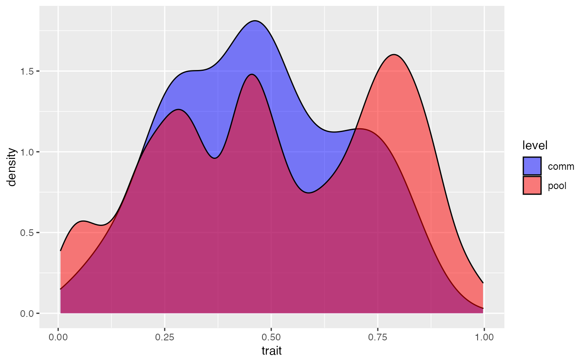

ecolottery-package.RdCoalescent-Based Simulation of Ecological Communities as proposed by Munoz et al. (2018) <doi:10.1111/2041-210X.12918>. The package includes a tool for estimating parameters of community assembly by using Approximate Bayesian Computation.
The DESCRIPTION file:
This package was not yet installed at build time.
Index: This package was not yet installed at build time.
Two basic functions: coalesc for coalescent-based simulation, and forward for forward-in-time simulation
NA
Maintainer: NA
Hurtt, G. C. and S. W. Pacala (1995). "The consequences of recruitment limitation: reconciling chance, history and competitive differences between plants." Journal of Theoretical Biology 176(1): 1-12.
Hubbell, S. P. (2001). "The Unified Neutral Theory of Biodiversity". Princeton University Press.
Gravel, D., C. D. Canham, M. Beaudet and C. Messier (2006). "Reconciling niche and neutrality: the continuum hypothesis." Ecology Letters 9(4): 399-409.
Munoz, F., P. Couteron, B. R. Ramesh and R. S. Etienne (2007). "Estimating parameters of neutral communities: from one Single Large to Several Small samples." Ecology 88(10): 2482-2488.
Munoz, F., B. R. Ramesh and P. Couteron (2014). "How do habitat filtering and niche conservatism affect community composition at different taxonomic resolutions?" Ecology 95(8): 2179-2191.
## Coalescent-based simulation of stabilizing habitat filtering around ## t = 0.5 J <- 100; theta <- 50; m <- 0.5; comm <- coalesc(J, m, theta, filt = function(x) 0.5 - abs(0.5 - x)) plot_comm(comm)## Forward-in-time simulation of stabilizing habitat filtering around ## t = 0.5, over 100 time steps # A regional pool including 100 species each including 10 individuals pool <- sort(rep(as.character(1:100), 10)) # Initial community composed of 10 species each including 10 individuals, # with trait information for niche-based dynamics initial <- data.frame(ind = paste("init", 1:100, sep="."), sp = sort(rep(as.character(1:10), 10)), trait = runif(100)) final <- forward(initial = initial, m = 0.5, gens = 100, pool = pool, filt = function(x) 0.5 - abs(0.5 - x))#> Warning: No trait information provided in the regional pool#>#> Warning: Sampling with replacement from the pool#> Warning: Sampling with replacement from the pool#> Warning: Sampling with replacement from the pool#> Warning: Sampling with replacement from the pool#> Warning: Sampling with replacement from the pool#> Warning: Sampling with replacement from the pool#> Warning: Sampling with replacement from the pool#> Warning: Sampling with replacement from the pool#> Warning: Sampling with replacement from the pool#> Warning: Sampling with replacement from the pool#> Warning: Sampling with replacement from the pool#> Warning: Sampling with replacement from the pool#> Warning: Sampling with replacement from the pool#> Warning: Sampling with replacement from the pool#> Warning: Sampling with replacement from the pool#> Warning: Sampling with replacement from the pool#> Warning: Sampling with replacement from the pool#> Warning: Sampling with replacement from the pool#> Warning: Sampling with replacement from the pool#> Warning: Sampling with replacement from the pool#> Warning: Sampling with replacement from the pool#> Warning: Sampling with replacement from the pool#> Warning: Sampling with replacement from the pool#> Warning: Sampling with replacement from the pool#> Warning: Sampling with replacement from the pool#> Warning: Sampling with replacement from the pool#> Warning: Sampling with replacement from the pool#> Warning: Sampling with replacement from the pool#> Warning: Sampling with replacement from the pool#> Warning: Sampling with replacement from the pool#> Warning: Sampling with replacement from the pool#> Warning: Sampling with replacement from the pool#> Warning: Sampling with replacement from the pool#> Warning: Sampling with replacement from the pool#> Warning: Sampling with replacement from the pool#> Warning: Sampling with replacement from the pool#> Warning: Sampling with replacement from the pool#> Warning: Sampling with replacement from the pool#> Warning: Sampling with replacement from the pool#> Warning: Sampling with replacement from the pool#> Warning: Sampling with replacement from the pool#> Warning: Sampling with replacement from the pool#> Warning: Sampling with replacement from the pool#> Warning: Sampling with replacement from the pool#> Warning: Sampling with replacement from the pool#> Warning: Sampling with replacement from the pool#> Warning: Sampling with replacement from the pool#> Warning: Sampling with replacement from the pool#> Warning: Sampling with replacement from the poolplot_comm(final)